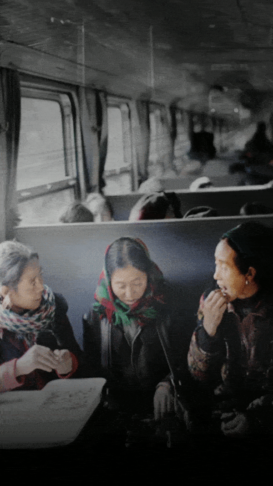
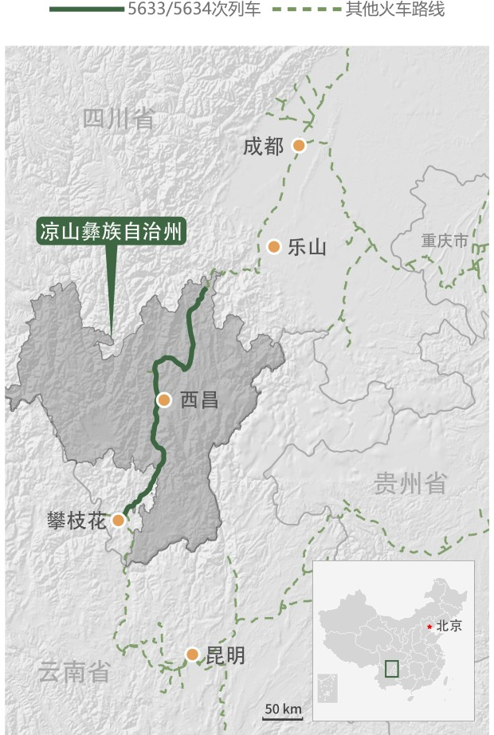

- one
- 一
- two
- 二
- three
- 三
- four
- 四
- five
- 五


一边是十几只山羊和几百斤木材，一边是肥猪黑狗和鸡鸭鹅，它们同时出现在一节被打通的火车车厢里。
这群特殊的“乘客”均来自西南大凉山区，从踏进这节车厢开始，它们的命运有了不同轨迹：有的被运往市集进行交易，有的被送去亲戚家酒宴充当下酒菜，也有的被用于为孩子教育正建的新房。
这是5633/5634次列车特别设立的行李牲口车厢，在阿西阿呷担任列车长的20年间，这样的景象每天都在眼前上演。5633/5634次、5619/5620次列车是成昆铁路上唯一两对慢车，前者往返攀枝花至普雄，后者往返普雄至燕岗，途径凉山彝族自治州，全程近600公里。自1970年7月开通起算，它们已运营48年。
成昆线铁路在山中行驶路段
 数据来源：Nature Earth，Earth Explorer群山之中，这是仅有的交通工具。尽管没有空调、餐车和卧铺，但因其低至2元的票价，停靠26个小站以及大运输量，当地居民视其为赖以生存的上学、赶集、探亲访友的生命线。他们亲切地称其为小慢车。
在官方的宣传中，这趟在高铁时代仍然开足马力、以不到40公里的时速持续运行的小慢车，有了许多不一样的称号：“赶集车”、“校车”、“扶贫车”、“致富车”……车的一端，是赤贫的山区；另一端，则是发展崛起的城市。充满车中的，则是日复一日的生活和淡淡的希望。
小慢车的走红是个意外。
一张网络图片中，阿西阿呷手把着两边座椅椅背正对镜头，不足40厘米的通道上，身前身后拱着黑色白色的4只肥猪，两边是看热闹的乘客，地面有些脏乱。
这是2015年11月彝族年期间，河北摄影爱好者拍下的影像。阿西阿呷协助从新凉站上车的猪贩子，将肥猪从2号车厢疏散到12号行李车厢。
来年春节，照片配上“大师兄，师傅被妖精抓走了，我坐火车去追”的注解，被疯狂转发，几乎一夜之间，默默运转了半个世纪的小慢车广为世人所知。
今年42岁的阿西阿呷已经在5633/5634次列车上工作了21年。她每天都能在车上看到鸡鸭鹅羊等家禽牲畜，或是土豆苞米等农副产品，带着这些货物的老乡通过慢车到镇上的市集赶场。
为此，5633/5634次列车上多了一节专为载送牲口家禽的行李车厢，标号“12”，车载重量17.7吨，可以同时装100多头几百斤的大肥猪。
然而，上世纪90年代的彝族乘客罕有经商，当时的彝族传统观念里，觉得做生意很羞耻。“没有人会把自己家里的东西拿出去贩卖，做生意的都是败家子。”阿西阿呷回忆，当时的主要客流量是走亲访友和赶集的人。改革开放后，越来越多的人有了发家致富脱贫的想法。
5633次列车尼波-米易路段旅客人数

5634次列车米易-尼波路段旅客人数
 数据来源：中国铁路成都局集团有限公司，12306官方网站
数据来源：中国铁路成都局集团有限公司，12306官方网站
“日常”数据采集自2017年1月15日，“高峰”数据采集自彝族新年期间， 2017年11月20日。以上为普雄往来攀枝花的5633/ 5634次列车局部路线数据。
越西县的曲木支铁是贩狗商。因为本地不吃狗肉，20年前他萌生了将狗贩卖到冕宁、广西的商机。
每年，他只在吃狗肉的冬季贩卖，从当地村民手里买来，转卖到前来收购的商贩手中，再一起贩到广西等地。有时他会带着几十条狗登上慢车，每条狗平均能有30元的收入。夏季，他在家种土豆和苞米。
曲木支铁时常感叹经济压力巨大，他有5个孩子，其中有3个儿子，按照当地习俗，给儿子娶媳妇得单独修房。
56岁的吉尔五牛木是12号车厢的常客，她带着鸡鸭鹅在慢车上往来20多年。她也是村子里最早开始经商的小贩之一。
家禽都是她从村里买的，通过慢车运到中间商，赚取差价。价钱好时，她一只鸡能挣三四块钱。
然而，受路程和时间影响，家禽会因排泄减轻重量。有时候收了5斤8两，到目的地就成了5斤半。因此，和其他商贩不同，在慢车行驶的几个小时里，吉尔五牛木必须待在牲口行李车厢，给家禽喂食玉米和凉粉，以弥补消耗。
有时鸡鸭鹅会因吃多而噎住，她赶紧帮忙顺脖子，将食物顺下去。死一只，这趟可能就白跑了。
2017年12月14日，她用背篓装了10只鹅和15只鸡，在月华站下车后，交给早已等候在站口的中间商。这天行情不好，一公斤鹅只能挣2块钱。
收成好的时候，她的年收入接近一万元。在村里还有很多土房子的情况下，吉尔五牛木靠贩家禽住上砖房，算是村里条件较好的人家。
深山里的校车
12号车厢里的“乘客”并非都是活物。2017年12月14日，和猪羊等活物放置在一起的还有几百斤捆扎整齐的木材。
阿说尔格位于西昌月华乡的新房即将动工，这些来自深山里的木材将被用作建造新房的围墙。7年前，他听说老家的教学质量太差，有人已经花高价将孩子送到教育资源相对较好的月华念书。他和家族里其他8个兄弟合计，9户人凑了40多万，在月华置地9亩6尺，用以建房搬家。但因资金紧缺，迟迟无法动工。
这几年，他们在全国各个建筑工地打工，200元一天的工资省吃俭用。12月14日这天，他们开始借助慢车一趟趟运送木材。房屋建好后，将有20多个孩子可以走出深山到月华念书。
阿说尔格想，他们的努力并不是为了让孩子考得多好，而是让他学会分辨是非的能力，活得比他们这辈人轻松就好
阿西阿呷觉得，这是彝族乘客教育观念改变的一个缩影。95%以上的家庭都把自己孩子送出去读书，不管男女，“教育才能阻断贫困代系传递“。
在父亲工作小站出生的阿西阿呷，入学时班上只有5个女生，到二年级只剩下2个，她是其中之一。那个年代能够工作自食其力的女生少之又少。
现在，她能清楚地感知女孩自身想法的改变。她经常在车厢里听到女学生窃窃私语，你看那个列车长是女生，她会说彝族话，她是彝族人。有阿西家族的女孩子告诉阿西阿呷，长大后也要当列车员。这让阿西阿呷非常欣慰，她告诉这群孩子，好好读书有条件走出凉山，通过慢车去大城市念书的大学生特别多。
今年15岁的吉克陈衣每周五都要花4块钱坐慢车回家，喜欢跳舞的她想去上海戏剧学院读大学。她所在的月华中学将近2000名学生，有700人要坐火车上学。为让学生们赶上火车回家，月华中学将每周五的放学时间提前至下午1点半。
在从西昌前往沙马拉达途中，阿西阿呷经常能见到依火红敏，她是西昌二中的高一学生。因为父亲依火哈古重视四个儿女的教育，他们举家从高山搬到方便出行的沙马拉达车站旁边，依火哈古自己在铁路沿线做保安，保障铁路安全，月收入1300元。
依火红敏的母亲没有工作，她在喜德县租房，带三个更小的孩子读书，红敏每周六搭乘小慢车回家，在喜德车站和母亲相会，一家人一道回到位于沙马拉达的家。
在依火红敏的印象里，当过乡村教师的爷爷从没有在她和弟弟妹妹前说过彝语，都说普通话，虽然听着很别扭，但爷爷在有意识地培养他们说好汉语。即将到来的高一下学期需要分科，依火红敏选择读文科，将来想去师范类院校，达成自己当老师的梦想
她觉得老师特别伟大。
生产、嫁娶、奔丧
在慢车，能看见人世百态。
阿西阿呷曾遇到过一对临产的年轻夫妻，他们躲在列车的厕所里准备生下自己的第一胎。阿西阿呷准备了一个用床单和方便面纸盒搭就的简易产棚，但因缺少助产经验，她硬生生地看着孕妇躺在自己面前，手足无措。列车沿线停靠的都是没有生产医疗条件的小站，而最大的站在乐山。
会阴口已经撑开小口，孩子黑色的毛发清晰可见。阿西阿呷凭着本能印象，不停用彝语告诉孕妇，抓牢车厢下方的木头板子，使劲用力。“不要让孩子卡住，那会窒息”，一个大颠簸，孩子生出来了。奔涌而出的大量羊水和血染湿了阿西阿呷的裤腿。她颤巍巍地拿剪刀无从下手，最后，新妈妈自己剪掉了脐带。
这是阿西阿呷的第一次接生。后来，车上生孩子的场景又重现了几十次，仅2016年在5634次列车上，就有16个新生儿出生。
她打心眼里佩服彝族妇女。有一个不到20岁的女生生下5斤多重的男孩，下嘴唇都咬破流血了，牙印子在肉里都没哼过一声。几乎所有的孕妇都是如此。在彝族的传统观念里，哼哼唧唧是非常难为情的事情。
她有时候也很心疼她们。一次，刚生下孩子的新妈妈大出血，肉眼可见大片的鲜血从加厚的绒裤里渗出，这是这位妈妈的第三胎。阿西阿呷劝她别再生产了。可是因为夫家长辈走得早，人丁不兴旺，她还是想再多拼几个。阿西阿呷叹气，这是把自己生命看得太轻了。
红白喜事也很常见
阿西阿呷经常遇到盖盖头的新娘子被背进车厢，送亲的娘家人多达五六十人，热闹喜气一下充满整个车厢。碰上好日子时，一趟车能遇到三四个，这些新娘有的嫁到冕宁、月华，远途的会到西昌。
奔丧的人很多。从衣着打扮上可以一眼分辨，如若死去的是老者，他们会穿得比较素净，多为蓝色和黑色。
有时，喜、丧会在列车上某个时刻交汇。12月14日的5633次列车上，6号车厢坐着参加婚宴的乘客，面上喜气洋洋。而相隔一个车厢的8号车，是一群前往喜德县奔丧的亲友。
“金江的太阳，马道的风，普雄下雨如过冬，燕岗打雷像炮轰”，600多公里的车程中，地形、温度、气候均不一致，一趟车经历了一年四季。每次出车，阿西阿呷要背上20多斤的双肩包，里面是棉袄、大衣、脸盆和洗漱用品。从燕岗开往西昌方向，她开始不停脱衣服，返程时，这些衣服又重新被套回来。
阿西阿呷经历过小慢车的柴油内燃机时代。她记得，火车上坡时呜呜地冒着黑烟，如果打开窗户将头伸出窗外，没等一个隧道过完，整张脸全是黑乎乎的。
大凉山人如何脱贫致富，穿着朴素的女人们开始穿金戴银，重男轻女的观念发生扭转，醉酒发生口角的情形近年几近消失，嫁娶、奔丧、新生儿，在小慢车上，这些改变在悄然发生。阿西阿呷觉得自己就像个见证者。
如不出意外，阿西阿呷将在慢车上退休。
孤独小站
调任到慢车工作之前，阿西阿呷在小站工作。每天，她最期待的是早晚迎送慢车，除了经停的货车，她看到的除了大山还是大山。
周而复始和孤寂是所有小站职工必须要面对的挑战。
12月14日晚的红峰车站只有三个职工：副站长吕胜，职工吕奉清和木嘎日铁。整个红峰站包括站长和副站长在内共6名职工，每四天由两个职工进行轮流单岗位作业。
两个人24小时3班倒，平均一个人要接二三十趟经停货车，不仅要监控室内，还得监控室外，5分钟左右就得出去接送车。冬天，一个铁火盆是仅有的取暖工具。
因地理环境，这里气候多变，早上晴空万里，下午可能冰雹，晚上寒风阵阵，早晚温差20度。吕奉清还穿着稍显单薄的制服，他尽量控制自己在最冷的时候穿上大衣。对吕奉清而言，信号时常断，联系不到外界，手机的功能只是闹钟，他有时熬不住了，一晚能抽6包烟。
1989年出生的姜方奇刚刚体会这种孤独3个月。2017年9月25日，他被调往沙马拉达车站，成为这个五等小站最年轻的一名职工。
他曾见过一起入行的年轻人，下火车后看到小站太偏僻，背着包转头就走。他也因此和相恋多年的女友分手。
沙马拉达站职工10人，仅承接接发列车的单一业务，年龄最大的耿玉坤已经在此坚守30年。
姜方奇的活动范围仅限在位于悬崖边的车站附近，最远也就是坐慢车到山下的喜德站转了一圈。他打趣道，小站的好处是工资花不出去。有时耐不住孤寂，他只好对着同事絮叨，有的老师傅不太爱说话，他还是逮着机会就说，能得到一个“嗯、哦”的回应也很好。
“大点的地图上都找不到这里。”姜方奇在中国地图上没有找到沙马拉达。在成昆铁路线上，沙马拉达车站是最艰苦的小站之一。
沙马拉达周围居住着1200多户村民，每天有几十上百的客流量。沙马拉达在彝文中是“索玛花开的山谷“，紧邻成昆铁路上长度最长，海拔最高的沙马拉达隧道，地势偏僻险峻。。
5633/5634次列车途经火车站
海拔可达2400米高
数据来源：12306官方网站，Google Earth
这里冰雪期长达4个月，常年吹四五级大风，被称为“风之站”。曾经，凛冽的大风将防盗门吹成变形，将一千多斤的太阳能热水器连桶带水吹翻下地。走在山谷的铁路桥上，就像没穿衣服似的，“风一吹过来，能给你吹透。“
“把这里当成自己家，才有归属感。”姜方奇很佩服站长薛东旭。他们也是小站仅有的两个80后
1986年出生的薛东旭是四代铁路传人。外曾祖父郝鸿业上世纪曾跟随詹天佑参与修建京张铁路；外祖父郝志敏在抗日战争期间从事列车员工作，因在列车上暗杀日本士兵，躲避追缉数年，解放后到西昌电务段担任技术骨干；父亲薛泽文在西昌机务段担任了39年机车乘务员
如果没有到铁路上工作，薛东旭可能会想当一名歌手。他钟情于声乐，休息时间，他常带着大家到车站附近爬山唱歌。
蔬菜是紧缺的物资，薛东旭主动负责采购和做饭，坐慢车到50公里外的喜德县城买菜。后来，他带着大家在宿舍旁边开辟了小菜园，种上了萝卜、蒜苗。 冬季的沙马拉达气候寒冷，水管经常结冰，有时一个月都不解冻，没有生活用水，职工就不能安心工作，他到周围四处找水，终于在3公里外的老乡家找到了一口不冻的山泉，每天背水回车站，解决了冬天职工生活用水难的问题。
“小站不太容易待得住，需要有奉献精神但总要有人来守着。铁打的营盘流水的兵，可能沙马拉达就是一个熔炉吧，一块铁放进来，变成一块好钢之后，就搬到其他岗位来用。“
相比于沙马拉达车务段职工，张胜平的孤独感是成倍的。
因接近退休年龄，2016年4月，张胜平被安排到沙马拉达工区接听电话，处理应急事项。院子里几十个房间，只住着他一个人。
他每天打扫下卫生，整理会菜园子。园子里种着莴笋、青菜、萝卜，但因天冷长势愁人。院子里还有个鱼塘，养了几百尾鱼苗，温度低，鱼也长得慢，一年才长一斤，想吃至少得等两年。
没人在时，他把狗给放了，上午去车站转转，看看电视，吃完中饭睡午觉，下午如果风不大，再去铁轨边走走。除了一个月坐慢车买两次菜，他几乎见不到活人。
屋里有个小电视机，有时候搜不到一个台。他隔一两天就给家里人打电话，给女儿，老婆和父母。碰上节假日，工区又没有人来顶班，他最多单独一个人待过30天。
“就是太清净了，太冷了。怕是把人都要住疯了，找不到人说，又没有电视看，就像他们那天开玩笑，住两个月说话都说不利索，傻得很。“张胜平将于2019年9月退休，这样的生活他还要过将近2年。
他总盼着工区来人。刘旭调侃他：“我上山来你才学会说话，平时只和鱼说话。“
刘旭带领的工队近期在负责沙马拉达隧道内部的病害整治，整治轨道轨迹和高低水平，让列车更平稳运行。
他比喻自己是蚂蚁人，沿着成昆线跟着病害走。15年里，哪里需要整治往哪里搬家，他曾从慢车首发站燕岗搬到终点站攀枝花。
他们一年内要在8个站点走一个轮回。这次，他们刚搬来沙马拉达3个月。
沙马拉达隧道中部是成昆线的最高点，海拔2442米。和其他隧道不同，沙马拉达隧道内部有暗河，无法使用道渣，而是浇灌水泥起固定支撑作用。水流冲刷作用使铁轨易发生下陷，轻度可以用胶垫垫高，严重的需要从底下灌水泥浆。
上世纪90年代，沙马拉达隧道的病害曾非常严重。现在的瓦组工务段班长黄安荣当时在沙马拉达隧道里住了一个月，过一趟列车就用手摸一下铁轨有没有发生下沉，并及时做处理。
刘旭很恼火冬季，手上全部都冻裂，“风吹起来嚎嚎的”。他捡了个烂树根，在院子里做根雕，准备做好了在上面放个漂亮花瓶。
瓦组工务段的申荣则直接把家搬到了瓦组站旁。从1991年开始，他就在瓦组站工作。1994年，结婚后老婆也随他一起留下来，平时在家开个小卖部做点生意。他女儿今年刚刚在遂宁工务段工作。
现在，申荣和12个职工一起，每天在铁轨上调整铁轨水平和两根铁轨间距，其中包括紧螺丝，更换受损的枕木和钢轨，填补道渣。
瓦组工务段张工长介绍，两根钢轨间距1435毫米，误差不能超过6毫米。如果一边钢轨比另一边矮5毫毛，就要把这个钢轨往上提5毫米，和另外一根永远保持在水平线上。
一公里840根枕木，一个枕木上4个螺丝。瓦组工区负责16公里线路，包括大小12个隧道10个桥梁，5万多颗螺丝。一星期要来回检查2次。
每天，有70多对货车和客车经过，平均3000吨重的列车重复碾压铁轨140趟，铁轨必定受影响。一有变化，必须得修理，要不然行车安全得不到保障。
惊险孤石队
山脚下的5619次慢车驶过，车上的乘客不会想到在沿线的险山绝壁上，有一支专业搜山队伍，每天都在抡起20斤重的铁锤，砸碎存在潜在威胁的危石，保障一趟趟列车的行车安全。
2017年12月18日，孤石队队员在沙湾地区半山腰处理一块早已登机在册的危石。他们先将周围的杂木砍去，留出方便作业的空间，拉上防护网以拦截打埋过程中坠落的碎石。
用钢钎在石头上打出眼子，再把楔子插进去，用锤子一锤，很快，石头被一分为二，再用锤子将较大的石块分解得更小，找个平坦的土地上垒起来。
锤子有20斤重，每敲一次就要用尽全身力气。张贵洪连续锤了十几次后，坐下喘着粗气，休息几分钟后他再锤了四五下，将锤子换给另外一个队员。
一个上午，这块石头在登机册上终于消去了编号。
这样的过程他们每天都在重复。
这支组建于1970年的西昌工务段“戴启宽孤石危岩整治队”，在四川铁路部门内是罕见工种，他们的任务是将铁路沿线山区所有危害铁轨列车安全的石头处理掉。张贵洪是第四代工长。
曾经，只要下雨，上山的石头纷纷滚落，砸烂铁路沿线的设备。据成都铁路局数据，1970年成昆线通车至1985年十几年间，该路段上发生落石550次，9次击中正在运行的货车和客车。1981年，一列奔驰的客车被巨石砸中，3节车厢坠进了奔涌的大渡河，240人丧生或失踪。
山上危险重重，有人说进了孤石队，就像进了鬼门关。第一代工长白青芝就因为在悬崖边作业，安全绳被凸起的石头割断而坠落山崖牺牲。
有一年冬天，他们在悬崖处理烂石，拇指大小的毒蜂从石头里飞出，刺穿棉衣，全身浮肿，张贵洪在医院里住了7天。当时的工长戴启宽则躺了一个月。现在，他们上山常备一些蛇蚁蚊虫的药粉。
孤石队有个厚厚的本子，上面记录着每块危石的资料，包括方位、体积、类别等，每块石头都有图片和编号。这是从1970年孤石队成立后就延续至今的做法。在孤石队的本子上，从沙湾到峨边有21个山头154处危石。
“楔、锤、撬、炸；撑、砌、捆、网；埋、除、移、刷”，这十二字治山法，是几代孤石人总结出处置危岩孤石的所有办法。
孤石队打埋过上万斤石头。有些风华严重的铁矿石虽然大，但开个眼就很好处理，而质地柔软的火山岩，因为没有硬度怎么也敲不烂，让孤石队很恼火。
他们曾在金口河遇到一块1 立方米的危石，用钢钎凿满了眼，却打不烂，只能硬敲，和敲椰子一样，敲了一个星期。
孤石队尝试过使用除岩机，两个抬着将近100多斤的机器攀岩，功能只是给石头打眼，最后还得人工敲碎。他们最终摒弃了机器帮手。攀岩、搜山、打埋石头，他们全靠自己的手脚。
他们负责沿线山脉全程196.6公里，分三个工段，每年要巡检一遍，中途会在十几处地点落脚。孤石队的队员特别费鞋，二三十元的橡胶鞋三双轮流穿，一个月总要穿坏一双。
但危石怎么也整治不完。除了深藏草丛里的还没被发现的石头，还有已经打埋好的却被当地农民挖出的土坎。现在，每个标号的危石上都装了一个圆圆的红色芯片，和卫星联网。石头一旦移动50米，信号消失。
收到信号后，孤石队队员要去现场找这块石头，根据石头在山间滚动的痕迹，按图索骥，找到石头的主体进行打埋。
2017年上半年，铁路上出现了一块几寸大小、70斤左右的石块，他们找到了山中的石头所在地时，已经石去山空。
有时候，碎石会溅起来打到脸上，打眼的钢钎上的碎铁也会飞起，像飞镖一样刺进肉里。983年就到孤石队工作的张贵洪就曾“中招”。同事用刀帮他划了一道小口子，里面掉出来一个铁屑
张贵洪的膝盖有骨质增生的毛病，每次得戴着厚厚的护膝，起身比正常人迟缓。他在成都工作的女儿说，从小在父亲身上闻到最多的味道就是狗皮膏药。
家人想让张贵洪病退，但他还想再干几年。年轻点的队员熊勇理解张贵洪的选择，他见过两个刚要退休的老工人，要求还要再上一两个月班——
“一辈子都在铁路上干一种工作，脱离铁轨有一种失落感。”